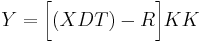
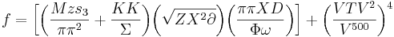

De: La Frikipedia, la enciclopedia extremadamente seria.
De: La Frikipedia, la enciclopedia extremadamente seria. De: La Frikipedia, la enciclopedia extremadamente seria.

|
Este artículo necesita ser ilustrado. Busca una afoto en nuestro depósito de imágenes o donde sea y ponla, pero que no sea pr0n, que se cabrea el señor del adSense y nos corta el grifo de los dólare. Y sin dólare no hay servidor... |
El teorema del Balón Maléfico afirma que cualquier blernsbol) acabará con un bonito moratón en el careto.
Hay una variable que determina que si el punto tiene los suficientes reflejos el teorema no se cumplirá

Puesto que está fórmula era extremadamente complicada, los científicos decidieron simplificarla para que todo el mundo, incluso tú, pueda entenderla

Descubierta por Maquiavelo. En principio la formula fué diseñada para aumentar el tamaño de los mofletes a mamporrazos, pero se vió que eso era una estúpidez y decidieron aplicarla a los balones
| | ||
|
Materia
Magnitudes
Mecánica
Cinética y Dinámica
Energía
Física Cuántica y Nuclear
Científicos
|
Autor(es):